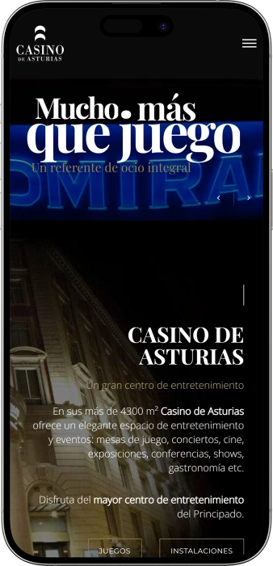

Oferta exclusiva de bienvenida de
Oferta exclusiva de bienvenida de
Vive la Mejor Experiencia de Casino en Asturias
Los mejores casinos
Detalles de bonificación
Casino
Bonos
Rate
Giros gratis
Más info
Conseguir
Ventajas
- ¿Buscas un casino completo en el Principado? Casino de Asturias ofrece más de 4300 m² de entretenimiento premium con mesas de juego en vivo, slots exclusivos y eventos culturales. Esto es lo que nos hace únicos:
-
Más de 4300 m² dedicados al entretenimiento y juegos de azar
-
Mesas de póker, blackjack y ruleta americana con crupieres profesionales
-
Slots modernos y exclusivos con jackpots progresivos
-
Torneos de póker y mesas de cash disponibles todo el año
-
Programación cultural: conciertos, cine, exposiciones y shows en vivo
-
Restauración y gastronomía de alta calidad en nuestras instalaciones
- Únete a miles de jugadores que disfrutan del mayor centro de entretenimiento del Principado. Nuestras instalaciones combinan juego, cultura y gastronomía en un espacio único.
Casino de Asturias App


Nuestra Historia en el Principado
Casino de Asturias es un referente del entretenimiento en el Principado desde hace décadas. Nuestro compromiso con la excelencia nos ha convertido en el mayor centro de ocio de la región. Combinamos juegos de azar, cultura y gastronomía en más de 4300 m².
- Expansión a más de 4300 m² de instalaciones de entretenimiento
- Incorporación de mesas de juego en vivo y torneos de póker
- Lanzamiento de programación cultural con conciertos y exposiciones
- Apertura de espacios para eventos privados y corporativos
Operamos bajo estrictas regulaciones de juego con estándares de seguridad certificados. Todas nuestras mesas y máquinas cumplen con normativas oficiales. Nuestro compromiso es ofrecer entretenimiento responsable y transparente para todos los jugadores. Continuamos innovando con nueva programación cultural y mejoras en nuestras instalaciones. El juego responsable es nuestra prioridad máxima. Visítanos y descubre por qué somos el destino preferido de entretenimiento en el Principado de Asturias.
Guía Completa de Juegos de Casino
Los Mejores Juegos de Casino en Asturias
El Casino de Asturias se posiciona como el epicentro del entretenimiento en el Principado gracias a su extensa oferta de juegos de azar. Con más de 4300 metros cuadrados dedicados al ocio, nuestras instalaciones albergan una impresionante variedad de opciones para todos los gustos. Desde las clásicas mesas de juego hasta las más modernas máquinas tragaperras, cada rincón está diseñado para ofrecer experiencias únicas. La combinación de tradición y tecnología convierte cada visita en una aventura inolvidable, donde la suerte y la estrategia se encuentran en perfecta armonía.
Mesas de Juego en Vivo con Crupieres Profesionales
Las mesas de juego representan el corazón del casino tradicional, y en Casino de Asturias mantenemos viva esta tradición con el más alto nivel de profesionalismo. Nuestros crupieres experimentados garantizan partidas dinámicas y transparentes, creando un ambiente de confianza y emoción. La interacción directa con el crupier añade una dimensión social al juego que las plataformas digitales no pueden replicar. Cada mesa está equipada con tecnología de vigilancia avanzada para asegurar la integridad de todas las partidas.
- Ruleta Americana: La ruleta es el juego más icónico de cualquier casino. Nuestra versión americana incluye el doble cero, lo que añade un nivel extra de emoción y posibilidades de apuesta. Los jugadores pueden realizar apuestas simples, múltiples, a color, par o impar, creando estrategias personalizadas según su estilo de juego.
- Blackjack Clásico: El juego de cartas favorito de los estrategas combina suerte y habilidad matemática. El objetivo de alcanzar 21 puntos sin pasarse requiere decisiones rápidas y análisis constante de probabilidades. Nuestras mesas ofrecen diferentes límites de apuesta para jugadores de todos los niveles.
- Póker Texas Hold'em: La modalidad más popular del póker mundial está disponible tanto en torneos organizados como en mesas de cash. Los jugadores compiten entre sí, no contra la casa, lo que genera dinámicas fascinantes donde la psicología juega un papel crucial junto con la estrategia.
- Baccarat: El juego preferido de los apostadores de alto nivel ofrece reglas simples pero acción trepidante. Con solo tres opciones de apuesta (jugador, banca o empate), el baccarat permite sesiones rápidas y emocionantes donde la fortuna puede cambiar en segundos.
Máquinas Tragaperras y Slots Modernos
Las máquinas tragaperras han evolucionado enormemente desde sus orígenes mecánicos hasta convertirse en sofisticadas plataformas de entretenimiento digital. En Casino de Asturias contamos con una selección premium de slots que incorporan las últimas tecnologías en gráficos, sonido envolvente y mecánicas de juego innovadoras. Cada máquina ofrece temáticas diferentes, desde aventuras épicas hasta historias de fantasía, pasando por recreaciones de películas famosas. Los jackpots progresivos conectados en red permiten acumular premios millonarios que pueden cambiar vidas en un solo giro afortunado.
- Slots de Video Multipantalla: Estas máquinas modernas presentan pantallas táctiles de alta definición con animaciones cinematográficas que sumergen al jugador en experiencias visuales impactantes. Las líneas de pago múltiples y funciones bonus interactivas multiplican las oportunidades de ganar.
- Tragaperras Clásicas de 3 Rodillos: Para los nostálgicos, mantenemos máquinas tradicionales con símbolos clásicos como frutas, campanas y sietes. Su mecánica simple y directa atrae a jugadores que prefieren la experiencia retro sin complicaciones.
- Jackpot Progresivo en Red: Estas máquinas especiales están conectadas para acumular un premio mayor que crece con cada apuesta realizada en cualquier máquina del sistema. Los jackpots pueden alcanzar cifras extraordinarias antes de entregarse a un afortunado ganador.
- Slots Temáticos Exclusivos: Colaboraciones con estudios de entretenimiento nos permiten ofrecer máquinas basadas en franquicias populares, con gráficos oficiales, bandas sonoras originales y mecánicas diseñadas específicamente para cada temática.
Torneos de Póker y Eventos Especiales
Los torneos de póker constituyen uno de los atractivos principales para jugadores competitivos que buscan demostrar su habilidad contra rivales del mismo nivel. Casino de Asturias organiza regularmente eventos con diferentes estructuras de buy-in para acomodar todos los presupuestos. Desde torneos semanales accesibles hasta campeonatos mensuales con premios sustanciales, la sala de póker vibra con la tensión de las competiciones. Los torneos no solo ofrecen premios monetarios, sino también la oportunidad de ganar asientos en eventos nacionales e internacionales de mayor prestigio.
La modalidad de cash game permite a los jugadores entrar y salir de las mesas según su conveniencia, sin la presión de estructura eliminatoria de los torneos. Las fichas representan valor real inmediato, lo que cambia completamente la dinámica estratégica. Nuestras mesas de cash funcionan con diferentes límites, desde micro-stakes para principiantes hasta high-stakes para profesionales experimentados. El ambiente en la sala de póker fomenta tanto la competición seria como el entretenimiento social, creando una comunidad activa de jugadores regulares.
Comparativa de Juegos Populares en Casino de Asturias
| Temporada | Tipo de Evento | Descripción | Público Objetivo |
|---|---|---|---|
| Primavera | Festival de Jazz | Conciertos íntimos con artistas nacionales e internacionales | Amantes de la música sofisticada |
| Primavera | Torneo de Póker Clasificatorio | Competición regional con premios sustanciales | Jugadores intermedios y avanzados |
| Verano | Noches de Gala | Eventos temáticos con dress code elegante | Adultos buscando experiencias premium |
| Verano | Exposición Fotográfica | Muestra de fotografía de naturaleza asturiana | Aficionados al arte y turistas |
| Otoño | Ciclo de Cine Clásico | Proyecciones de películas icónicas restauradas | Cinéfilos y público general |
| Otoño | Maridajes Gastronómicos | Degustaciones guiadas de vino y cocina regional | Gourmets y curiosos culinarios |
| Invierno | Campeonato de Blackjack | Torneo eliminatorio con formato innovador | Jugadores estratégicos de todos niveles |
| Invierno | Celebraciones de Fin de Año | Cena de gala con espectáculo y brindis especial | Familias y grupos de amigos |
Estrategias Fundamentales para Maximizar tu Experiencia
Cada juego de casino requiere un enfoque estratégico diferente para optimizar las posibilidades de éxito. En el blackjack, dominar la estrategia básica matemática puede reducir la ventaja de la casa a menos del 1%, convirtiendo este juego en uno de los más favorables para el jugador disciplinado. La gestión del bankroll es crucial independientemente del juego elegido: establecer límites claros de pérdida y ganancia antes de comenzar ayuda a mantener el control emocional. En juegos de pura suerte como la ruleta o slots, es importante entender que cada giro es independiente y que no existen sistemas infalibles, por lo que el entretenimiento debe primar sobre la expectativa de ganancias garantizadas.
- Gestión de Bankroll: Divide tu presupuesto en sesiones separadas y nunca apuestes dinero que no puedas permitirte perder. Una regla general es no arriesgar más del 5% de tu bankroll total en una sola sesión de juego. Esta disciplina financiera protege contra pérdidas devastadoras.
- Conocimiento de Probabilidades: Entiende las verdaderas probabilidades de cada apuesta antes de comprometer tu dinero. En ruleta americana, una apuesta directa tiene solo 2.63% de probabilidad de acertar, mientras que apostar a rojo o negro ofrece casi 47% de posibilidades.
- Control Emocional: Las decisiones impulsivas motivadas por rachas perdedoras o ganadoras suelen resultar en pérdidas mayores. Tomar descansos regulares ayuda a mantener la mente clara y objetiva. El casino siempre estará ahí mañana.
- Aprovechamiento de Promociones: Los bonos y promociones del casino pueden extender tu tiempo de juego sin inversión adicional. Lee siempre los términos y condiciones para entender los requisitos de apuesta antes de aceptar cualquier oferta promocional.
Juego Responsable y Seguridad en Casino de Asturias
El compromiso con el juego responsable es fundamental en Casino de Asturias. Implementamos múltiples medidas para proteger a nuestros clientes y garantizar que el entretenimiento no se convierta en problema. Nuestro personal está capacitado para identificar señales de juego problemático y ofrecer asistencia cuando sea necesario. Disponemos de programas de autoexclusión voluntaria para quienes necesiten un descanso temporal o permanente de las actividades de juego. La transparencia en las probabilidades y reglas de cada juego empodera a los jugadores para tomar decisiones informadas sobre su participación.
La seguridad física y digital de nuestras instalaciones es prioritaria. Sistemas de vigilancia de última generación monitorizan todas las áreas del casino las 24 horas del día, protegiendo tanto a clientes como al personal. Nuestros sistemas de pago cumplen con los más altos estándares de seguridad bancaria, garantizando que las transacciones se realicen de forma protegida. El equipo de seguridad profesional está presente discretamente para responder ante cualquier situación que requiera intervención. Esta combinación de tecnología y personal capacitado crea un ambiente donde los jugadores pueden concentrarse únicamente en disfrutar de su experiencia sin preocupaciones adicionales.
Casino de Asturias cumple estrictamente con todas las regulaciones gubernamentales sobre juego y entretenimiento. Nuestras licencias están actualizadas y son verificables públicamente. Realizamos auditorías regulares de todos nuestros sistemas de juego para garantizar equidad y transparencia. La edad mínima de entrada es de 18 años, y verificamos rigurosamente la identidad de todos nuestros visitantes. Esta adherencia a normativas no solo protege legalmente al casino, sino que principalmente salvaguarda los derechos y el bienestar de cada jugador que cruza nuestras puertas.
Proveedores de software
Entretenimiento Integral y Eventos Exclusivos
Más Allá del Juego: Experiencia Completa en Casino de Asturias
Casino de Asturias trasciende el concepto tradicional de casa de juegos para convertirse en un auténtico centro cultural y de entretenimiento integral. Con más de 4300 metros cuadrados distribuidos estratégicamente, nuestras instalaciones fusionan emoción del juego, refinamiento gastronómico, expresión artística y celebraciones exclusivas. Esta visión holística del entretenimiento responde a las demandas de una audiencia moderna que busca experiencias multifacéticas donde cada visita ofrece algo nuevo por descubrir. La arquitectura del edificio combina elegancia clásica con funcionalidad contemporánea, creando espacios versátiles que se adaptan a diferentes propósitos sin perder coherencia estética.
Programación Cultural de Alto Nivel
La agenda cultural de Casino de Asturias rivaliza con la de muchos teatros y centros culturales especializados. Organizamos regularmente conciertos en vivo con artistas locales e internacionales que abarcan géneros musicales diversos, desde jazz íntimo hasta rock enérgico. Las exposiciones de arte rotan mensualmente, ofreciendo plataforma a artistas emergentes del Principado junto con obras de creadores reconocidos. Nuestro cine-club proyecta películas clásicas y contemporáneas en formato que privilegia la experiencia cinematográfica auténtica. Las conferencias y charlas sobre temas variados atraen a intelectuales y curiosos, convirtiendo nuestras salas en espacios de debate e intercambio cultural.
- Conciertos en Vivo: Nuestra sala principal se transforma en escenario acústicamente optimizado para espectáculos musicales. La programación incluye desde tributos a leyendas del rock hasta conciertos de música clásica interpretada por orquestas regionales. Los eventos nocturnos de jazz crean atmósferas íntimas perfectas para disfrutar con una copa.
- Exposiciones de Arte Contemporáneo: Nuestras galerías temporales exhiben pintura, escultura, fotografía y arte digital. Cada inauguración incluye encuentro con los artistas, permitiendo a los visitantes comprender el contexto y proceso creativo detrás de las obras expuestas. Algunas piezas quedan disponibles para adquisición.
- Cine de Autor y Clásicos: Las proyecciones cinematográficas recuperan el placer de ver películas en pantalla grande con sonido envolvente profesional. Sesiones temáticas exploran movimientos cinematográficos específicos o filmografías de directores legendarios, frecuentemente seguidas de coloquios moderados por críticos especializados.
- Shows y Espectáculos Teatrales: Compañías teatrales locales encuentran en nuestro escenario el espacio ideal para montajes íntimos. Desde monólogos cómicos hasta drama experimental, la variedad escénica asegura que siempre haya algo nuevo que presenciar. Los shows de magia y mentalismo añaden entretenimiento familiar.
- Conferencias y Charlas Culturales: Pensadores, historiadores, científicos y personalidades públicas comparten conocimientos en eventos educativos abiertos al público. Los temas abarcan desde historia regional hasta tendencias tecnológicas globales, fomentando aprendizaje continuo en ambiente relajado.
Gastronomía de Excelencia
La propuesta gastronómica en Casino de Asturias eleva la experiencia culinaria a estándares dignos de guías especializadas. Nuestros restaurantes integrados ofrecen menús diseñados por chefs con formación en alta cocina, utilizando productos de proximidad que destacan la riqueza gastronómica asturiana. La selección de vinos incluye denominaciones de origen nacionales e internacionales cuidadosamente curadas para maridar perfectamente con cada plato. Los espacios gastronómicos han sido concebidos para satisfacer diferentes ocasiones: desde comidas de negocios formales hasta cenas románticas, pasando por celebraciones grupales animadas. La presentación de cada plato refleja atención al detalle estético que convierte la comida en experiencia sensorial completa.
Más allá del restaurante principal, contamos con barra de coctelería especializada donde mixólogos profesionales elaboran bebidas clásicas y creaciones originales. El bar sirve como punto de encuentro social donde los visitantes pueden relajarse entre partidas o simplemente disfrutar del ambiente sofisticado. Las tapas gourmet disponibles en la barra permiten picar algo ligero sin comprometerse a comida completa. Durante eventos especiales, organizamos maridajes temáticos que combinan degustaciones de vino o whisky con explicaciones expertas sobre orígenes, procesos de elaboración y notas de cata. Esta dimensión gastronómica convierte cada visita al casino en exploración culinaria paralela a la búsqueda de entretenimiento.
Eventos Privados y Corporativos Personalizados
Casino de Asturias ofrece sus instalaciones para celebraciones privadas que requieren entorno excepcional. Nuestros espacios modulares se adaptan a eventos de diferentes escalas, desde reuniones íntimas de 20 personas hasta galasdescomunales de 300 invitados. El equipo de coordinación de eventos trabaja estrechamente con cada cliente para materializar visiones específicas, ocupándose de logística, decoración, catering y entretenimiento. Las celebraciones corporativas encuentran en nuestras salas el equilibrio perfecto entre profesionalismo y originalidad que impresiona a clientes y motiva a empleados. Las bodas celebradas en nuestras instalaciones adquieren carácter cinematográfico gracias a la elegancia arquitectónica y servicios premium disponibles.
- Conferencias y Convenciones Empresariales: Nuestras salas equipadas con tecnología audiovisual de última generación facilitan presentaciones profesionales impactantes. Conexión de alta velocidad, proyectores 4K, sistemas de sonido envolvente y opciones de videoconferencia garantizan comunicaciones efectivas con audiencias presenciales y remotas simultáneamente.
- Celebraciones de Aniversario Empresarial: Reconocer hitos corporativos en Casino de Asturias añade prestigio al evento. Podemos organizar desde cenas de gala formales hasta fiestas temáticas divertidas, siempre incorporando elementos que reflejen la identidad de la empresa celebrante y sus logros específicos.
- Bodas y Ceremonias Nupciales: El romance inherente a nuestros espacios proporciona escenario ideal para el día más importante. Ofrecemos paquetes completos que incluyen ceremonia, banquete, música en vivo, fotografía profesional y coordinación integral. Cada boda recibe atención personalizada para reflejar gustos únicos de la pareja.
- Fiestas de Cumpleaños Memorables: Celebrar cumpleaños significativos en nuestras instalaciones garantiza experiencia que los invitados recordarán. Desde decoración temática hasta entretenimiento en vivo personalizado, cada detalle se ajusta a preferencias del homenajeado para crear celebración verdaderamente única.
- Eventos de Networking Profesional: Facilitamos encuentros entre profesionales de diversos sectores en ambiente distendido que favorece conexiones genuinas. Estos eventos combinan presentaciones breves con amplios períodos de interacción social, todo acompañado de gastronomía y bebidas premium.
Instalaciones y Servicios Complementarios
La infraestructura de Casino de Asturias ha sido diseñada considerando comodidad y accesibilidad universal. Amplios estacionamientos facilitan llegada sin estrés de búsqueda de aparcamiento. Accesos adaptados para personas con movilidad reducida garantizan que todos puedan disfrutar plenamente de nuestras instalaciones sin barreras arquitectónicas. Los guardarropas seguros permiten a los visitantes moverse libremente sin preocuparse por pertenencias. Áreas de descanso estratégicamente ubicadas ofrecen refugio momentáneo del bullicio de las salas de juego. La climatización avanzada mantiene temperaturas óptimas en todos los espacios independientemente de condiciones exteriores, asegurando confort durante estancias prolongadas.
Nuestro servicio de atención al cliente opera continuamente para resolver consultas, gestionar reservaciones y atender necesidades especiales. Personal multilingüe asiste a visitantes internacionales en sus idiomas nativos, eliminando barreras comunicativas. Ofrecemos servicios de taxi y transporte coordinado para grupos que prefieren no conducir después de disfrutar de nuestra oferta gastronómica. La conectividad WiFi gratuita de alta velocidad cubre todas las instalaciones, permitiendo a visitantes permanecer conectados según necesiten. Cajeros automáticos convenientemente ubicados proporcionan acceso inmediato a efectivo. Estos detalles operativos, aunque puedan parecer menores individualmente, colectivamente definen la calidad excepcional de la experiencia que prometemos.
Calendario Anual de Eventos Destacados
| Temporada | Tipo de Evento | Descripción | Público Objetivo |
|---|---|---|---|
| Primavera | Festival de Jazz | Conciertos íntimos con artistas nacionales e internacionales | Amantes de la música sofisticada |
| Primavera | Torneo de Póker Clasificatorio | Competición regional con premios sustanciales | Jugadores intermedios y avanzados |
| Verano | Noches de Gala | Eventos temáticos con dress code elegante | Adultos buscando experiencias premium |
| Verano | Exposición Fotográfica | Muestra de fotografía de naturaleza asturiana | Aficionados al arte y turistas |
| Otoño | Ciclo de Cine Clásico | Proyecciones de películas icónicas restauradas | Cinéfilos y público general |
| Otoño | Maridajes Gastronómicos | Degustaciones guiadas de vino y cocina regional | Gourmets y curiosos culinarios |
| Invierno | Campeonato de Blackjack | Torneo eliminatorio con formato innovador | Jugadores estratégicos de todos niveles |
| Invierno | Celebraciones de Fin de Año | Cena de gala con espectáculo y brindis especial | Familias y grupos de amigos |
Compromiso con la Comunidad Asturiana
Casino de Asturias reconoce su responsabilidad como actor relevante en el tejido socioeconómico del Principado. Colaboramos activamente con organizaciones locales sin ánimo de lucro a través de patrocinios y cesión de espacios para eventos benéficos. Nuestro programa de empleo prioriza talento local, proporcionando oportunidades laborales de calidad a residentes de la región. Apoyamos iniciativas culturales emergentes ofreciendo plataforma de visibilidad a artistas principiantes que de otro modo tendrían dificultades para mostrar su trabajo. Las compras de productos y servicios privilegian proveedores asturianos, fortaleciendo la economía circular regional y reduciendo huella de carbono asociada a transporte de larga distancia.
La sostenibilidad ambiental guía nuestras decisiones operativas cotidianas. Implementamos sistemas de eficiencia energética que minimizan consumo eléctrico sin comprometer iluminación ni climatización. Los programas de reciclaje exhaustivos gestionan responsablemente residuos generados diariamente. Reducimos uso de plásticos desechables en áreas de gastronomía, optando por alternativas biodegradables o reutilizables. El mantenimiento preventivo de instalaciones extiende vida útil de equipamiento, evitando reemplazos prematuros. Estas prácticas reflejan conciencia de que el entretenimiento presente no debe hipotecar calidad de vida futura de la comunidad que nos acoge.
Educamos activamente sobre juego responsable no solo dentro de nuestras instalaciones, sino también mediante campañas de concienciación en medios locales. Financiamos investigación sobre prevención de ludopatía en colaboración con universidades regionales. Nuestro personal recibe formación continua en detección temprana de comportamientos problemáticos y técnicas de intervención respetuosa. Mantenemos convenios con organizaciones especializadas en tratamiento de adicciones para facilitar derivaciones cuando es necesario. Este enfoque integral demuestra que el éxito empresarial y la responsabilidad social no son conceptos mutuamente excluyentes, sino dimensiones complementarias de operación ética.
Preguntas frecuentes
Casino de Asturias ofrece una amplia variedad de juegos incluyendo mesas en vivo de póker Texas Hold'em, blackjack, ruleta americana y baccarat con crupieres profesionales. También contamos con más de cien máquinas tragaperras modernas con jackpots progresivos y slots temáticos exclusivos. Organizamos torneos de póker regularmente y mantenemos mesas de cash disponibles para todos los niveles de jugadores.
Nuestras instalaciones principales operan en horario ampliado para ofrecer máxima flexibilidad a nuestros visitantes. Las salas de juego permanecen abiertas durante la mayor parte del día con horarios extendidos los fines de semana. Recomendamos consultar nuestra página web o contactar directamente para confirmar horarios específicos de eventos culturales, restaurante y celebraciones especiales que pueden variar según la programación.
Sí, Casino de Asturias cuenta con restaurante de alta cocina que sirve platos elaborados con productos locales de primera calidad. Nuestro menú combina gastronomía tradicional asturiana con toques de cocina contemporánea. También disponemos de bar de coctelería especializado con amplia carta de bebidas premium y tapas gourmet. Durante eventos especiales organizamos maridajes temáticos guiados por sommeliers profesionales.
Absolutamente. Casino de Asturias ofrece espacios versátiles para todo tipo de eventos privados y corporativos, desde bodas y celebraciones familiares hasta conferencias empresariales y convenciones. Nuestro equipo de coordinación trabaja personalizando cada detalle según sus necesidades específicas, incluyendo catering, decoración, tecnología audiovisual y entretenimiento. Contáctenos para conocer disponibilidad y paquetes personalizados para su evento especial.
La seguridad es prioridad absoluta en Casino de Asturias. Contamos con sistemas de vigilancia de última generación monitoreando todas las áreas las 24 horas. Personal de seguridad profesional está presente discretamente en todo momento. Verificamos rigurosamente la identidad de todos los visitantes para garantizar el cumplimiento de normativas de edad mínima. Nuestros sistemas de pago cumplen estándares bancarios más exigentes protegiendo transacciones financieras.
Sí, Casino de Asturias mantiene un calendario activo de torneos de póker Texas Hold'em con diferentes estructuras de buy-in para acomodar todos los presupuestos. Organizamos eventos semanales accesibles y campeonatos mensuales con premios sustanciales. Los ganadores de ciertos torneos pueden clasificar para competiciones regionales y nacionales de mayor prestigio. También ofrecemos mesas de cash game permanentes para quienes prefieren juego sin estructura eliminatoria.
Casino de Asturias es un centro de entretenimiento integral con variada programación cultural que incluye conciertos en vivo, exposiciones de arte contemporáneo, proyecciones de cine clásico y shows teatrales. Organizamos conferencias sobre temas diversos y maridajes gastronómicos guiados. Nuestros más de 4300 metros cuadrados albergan espacios dedicados específicamente a actividades culturales, complementando perfectamente la oferta de juego con experiencias enriquecedoras.
El juego responsable es compromiso fundamental en Casino de Asturias. Ofrecemos programas de autoexclusión voluntaria para quienes necesiten descanso temporal o permanente. Nuestro personal está capacitado en identificar comportamientos problemáticos y ofrecer asistencia adecuada. Mantenemos convenios con organizaciones especializadas en tratamiento de adicciones para facilitar derivaciones. Promovemos activamente la educación sobre límites saludables y gestión responsable del bankroll.